Wyjście z epoki oprogramowania łupanego
...i jak nam w tym pomógł message-passing
oraz feature-driven development
Bio
Tomasz Frydrychewicz
- programista od ~18 lat
- od 13 lat związany z webem
- podróże, gry planszowe i dobre wino
/frydrychewicz
Konrad Banaszek
- programista od ~7 lat
- zwolennik ciemnej strony (backend-owej)
- podróże, gry planszowe i dobre piwo
/thecorrado
MoneyGram
- Przekazy pieniężne
- 200 krajów, 350 tys placówek, 10 mln klientów
- Dochód $358.8 mln
Agenda
Epoka kamienia
Proces
- Fragmenty systemu poza repozytorium kodu
- Dwumiesięczny cykl releasowania
- Proces całkowicie manualny
- Release management
- Testy
- Dostarczanie oprogramowania na środowisko produkcyjne
Proces
Continuous Integration
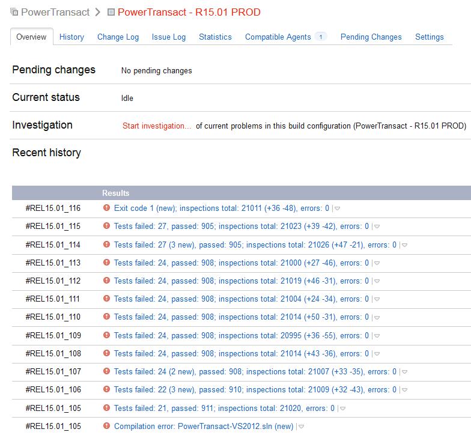Architektura
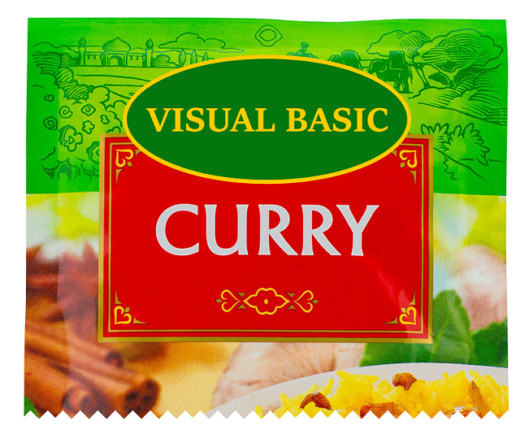Stos technologiczny
- .NET od 2.0 do 4.0
- "Backend" C#
- "Frontend" VB.NET ( ͠° ͟ʖ ͡°)
- ASP.NET WebForms
- Telerik
UI
- Przeciążony ASPX (~ 30-40k loc)
- Przeciążony CodeBehind z przeciekającą logiką
- Przypisywanie funkcji JS w CodeBehind (mouseover, etc.)
- JS: sterowanie DOM wymieszane z logiką
- Wsparcie tylko dla IE8-9
- Nieresponsywny, oparty na ZOOM
Serwer
- Sesja, wszędzie sesja... Wyciekająca od ASPX do DAL
- Onionizm (warstwy-proxy) - UI-BLL-DAL
- (Prawie) brak unit testów
- ~1000 Thread.Sleep
Chwytliwe zwroty
D R Y
DRY
Repeat Yourself
K I S S
KISS
Keep It Stupidly Complicated
I o C
NoN
None of Control
Spaghetti code
GOTO
1 / 0
Średniowiecze
Na ratunek przybywa zespół z grodu Warsa i Sawy
Średniowiecze - Proces
- Kanban w JIRA
- Przegląd kodu w Upsource
- Phoenix Deployment (w dalszym ciągu ręczny)
Średniowiecze - Proces
Continuous Integration
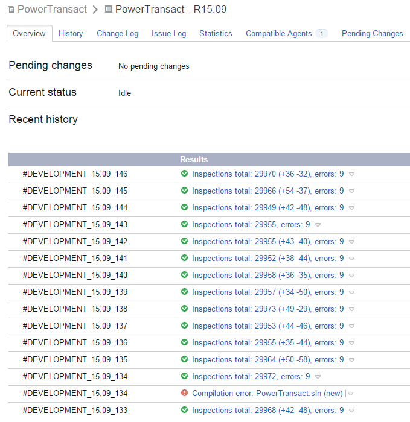Średniowiecze - Proces
Ciasne, ale własne...
Średniowiecze - Architektura
- Dependency Injection z użyciem StructureMap
- Wprowadzamy "prawdziwe" testy
- Pozbywamy się sesji z DAL
Nowożytność
Tu jesteśmy.
Struktura projektów (Sewer)
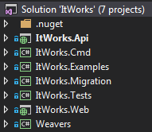Struktura projektu (Klient)
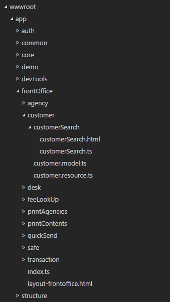Architektura
- UI
- Serwer
UI
UI
Stos technologiczny - Klient
- JavaScript
- TypeScript
- System.JS
- Angular
- SASS
- Bootstrap-SASS
UI
Stos technologiczny - Developer
- Node
- Gulp
- Visual Studio Code
UI
Architektura
- Asynchronicznie gdzie się da
- Leniwie gdzie się da
- (Bardzo) silnie typy
- (Lepsze) zarządzanie cyklem życia
- Feature driven
- Komponenty
- Aspektowość
- Attribute routing
- Bardzo dynamiczne formularze
- Wersjonowanie
UI
Asynchronicznie gdzie się da
UI
Leniwie gdzie się da
import {route, inject, translated, customElement} from 'app/app';
import {actions} from '../auth.store';
import {Dispatcher} from 'app/core/flux';
import {User} from '../user';
import {DeskId} from 'app/structure';
import {Alert} from 'app/common/ui';
...
UI
(Bardzo) silnie typy
@customElement('search-agents')
@inject(CitiesResource, Dispatcher, State, StatesResource, AgencyInformationResource, Moment)
export class SearchAgentsComponent {
public city: string;
public selectedCity: string;
public selectedState: State;
public states: State[];
public agents: ItWorks.Api.Agency.AgentInformation[];
@bindable.expression public country: string;
@bindable.value public size: number;
constructor(
private citiesResource: CitiesResource,
private dispatcher: Dispatcher,
private state: State,
private statesResource: StatesResource,
private agencyInformationResource: AgencyInformationResource,
private moment: Moment) {}
...
}UI
(Lepsze) zarządzanie cyklem życia
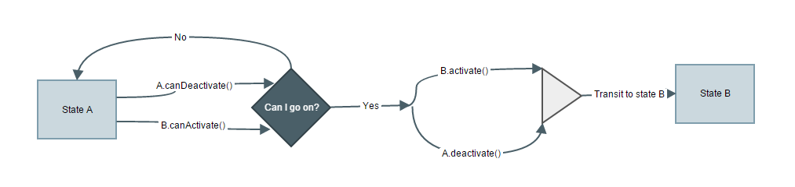UI
Feature driven
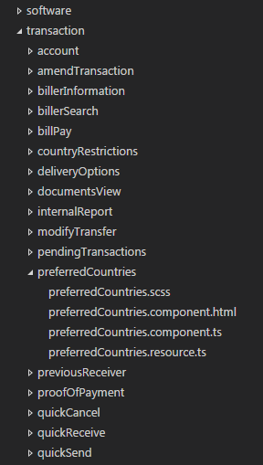UI
Komponenty [1/2]
import {customElement, inject, bindable, route} from 'app/app';
import {PreferredCountriesResource} from './preferredCountries.resource'
import {AgencyId} from 'app/structure/agency';
import "./preferredCountries.css!";
@customElement('preferred-countries')
@inject(PreferredCountriesResource)
@route('iw.auth.preferredCountries', {
url: '/components/preferred-countries'
})
@translate
export class PreferredCountries {
...
}UI
Komponenty [2/2]
import {customAttribute, withoutTemplate, element, bindable, inject} from 'app/app'
import {Parse} from 'app/core/angular';
import {AuthProvider} from './provider';
import * as _ from 'lodash';
@customAttribute('iw-authorize')
@withoutTemplate
@inject(Parse)
export class AuthorizeAttribute {
...
}UI
Aspektowość
import {customElement, inject, bindable, route} from 'app/app';
import {PreferredCountriesResource} from './preferredCountries.resource'
import {AgencyId} from 'app/structure/agency';
import "./preferredCountries.css!";
@customElement('preferred-countries')
@inject(PreferredCountriesResource)
@route('iw.auth.preferredCountries', {
url: '/components/preferred-countries'
})
@translate
export class PreferredCountries {
...
}UI
Attribute routing [1/2]
@route('iw.auth.login', {
url: '/login'
})
@translated
@inject(Dispatcher, User, Alert)
export class LogIn {
...
}UI
Attribute routing [2/2]
[
...
{
"name": "iw.auth.login",
"controller": "LogIn",
"module": "app/auth/login/login",
"options": {
"url": "/login"
}
},
...
]UI
Bardzo dynamiczne formularze [1/2]
import {DynamicFormsResource} from 'app/common/dynamicForms/dynamicForms.resource';
@customElement('customer-form')
@inject(DynamicFormsResource)
export class CustomerForm {
constructor(private dynamicFormsResource: DynamicFormsResource) {}
activate() {
return this.formSchemaPromise = this.dynamicFormsResource
.getForm(ItWorks.Api.DynamicForms.FormType.Customer)
.then(schema => {
...
});
}
...
}UI
Bardzo dynamiczne formularze [2/2]
...
UI
Wersjonowanie
@route('iw.auth.login', {
url: '/login',
version: 1
})
@inject(SomeResource)
export class Login {
...
}@route('iw.auth.login', {
url: '/login',
version: 2
})
@inject(NewVersionOfSomeResource, AnotherService)
export class Login {
...
}UI
...i wspieramy IE 8 :-)
Serwer
Stos technologiczny
- .NET 4.5.2
- ASP.NET WebApi + Swashbuckle Swagger
- Structure Map
- Dapper
- Mono.Cecil + Fody
- Glimpse
- inne:
- FluentValidator, FluentMigrator, CommandLineParser, Psake
Architektura
Message Passing
IDispatcherIHandleRequest
IDispatcher
public interface IDispatcher
{
OutEnvelope<TResponse> Dispatch<TRequest, TResponse>(TRequest request)
where TRequest : Request<TResponse>
where TResponse : class;
}
IHandleRequest
public interface IHandleRequest<TMessage, TResponse> : IHandleRequest
where TMessage : Request<TResponse>
where TResponse : class
{
OutEnvelope<TResponse> Handle(TMessage request);
}
IHandleRequest przykład
public class GetSapleDataHandler
: IHandleRequest<GetSampleData.Request, IEnumerable<string>>
{
private readonly SqlConnection _connection;
...ctor...
public OutEnvelope<IEnumerable<string>> Handle(GetSampleData.Request request)
{
var rows = _connection.Query<SomeRow>(@"
SELECT [Something] FROM [Somewhere]");
if (rows == null)
return OutEnvelope<IEnumerable<string>>.NotFound();
var result = rows.Select(r => r.Something);
new OutEnvelope<IEnumerable<string>>(result); // or just: return result;
}
}
IHandleRequest wywołuje inny handler
public OutEnvelope<ImportantData> Handle(GetImporantData.Request request)
{
var employeeId = _dispatcher.Dispatch(
new GetEmployeeId.Request(request.SomeId)).Body;
var rows = _connection.Query<SomeRow>(@"
SELECT [Something] FROM [Somewhere] WHERE EmployeeId = @EmployeeId",
new { EmployeeId = employeeId });
(...)
}
IHandleRequest dekorujemy
public CacheHandler(IHandleRequest<TRequest, TResponse> wrapped,
ICacheRequirement requirement,
ICacheService<TRequest,
OutEnvelope<TResponse>> cacheService)
{
_wrapped = wrapped;
_requirement = requirement;
_cacheService = cacheService;
}
public OutEnvelope<TResponse> Handle(TRequest request)
{
return _cacheService.GetOrAdd(_requirement, request,
() => _wrapped.Handle(request));
}
IHandleRequest więcej dekorujemy!
public CacheHandler(...)
public AuditHandler(...)
public TracingHandler(...)
public GlimpseHandler(...)
Dekorujemy ze StructureMap
public class GlimpsePolicy : IInterceptorPolicy
{
public string Description { get { return "..."; } }
public IEnumerable<IInterceptor> DetermineInterceptors(
Type type, Instance instance)
{
if (!type.IsHandlerInterfaceType())
{
yield break;
}
var handler = typeof(GlimpseHandlerDecorator<,>)
.MakeGenericType(type.GetGenericArguments());
yield return new DecoratorInterceptor(type, handler);
}
}
Testujemy cały handler
[Test]
public void Some_Test_ThenError()
{
Given( // tworzymy Fakes wszystkich wywołań handlerów w testowanym handlerze
new Fakes.UserInAgency(AgencyId, EmployeeId),
new Fakes.HasPermission(EmployeeId, OrgId, ...),
...etc...
);
When(new SearchCustomer.Request(...)); // request dla testowanego handlera
Then( // oczekujemy rezultatu handlera
new ValidationError("Document.Number", "Number missing"));
}
WebApi
WebApi - Controller
public class CustomerController : ApiController
{
[Route("api/customer/{CustomerId}")]
[ResponseType(typeof (Customer))]
public HttpResponseMessage Get([FromBodyAndUri] GetCustomer.Request request)
{
...call dispatcher...
}
}
WebApi - BaseController
public class BaseController : ApiContoller
{
protected HttpResponseMessage Handle(object request)
{
if (!ModelState.IsValid)
{ ... }
var dependencies = Request.GetDependencyScope();
var service = (IDispatcher)dependencies
.GetService(typeof (IDispatcher));
var outEnvelope = (IOutEnvelope) service.Dispatch(request);
return Request.CreateResponse(outEnvelope.Code,
new ResponseBody(outEnvelope));
}
}
Mono.Cecil & Fody for the win!
public void Execute()
{
var baseController = ModuleDefinition
.GetTypes().Single(t => t.Name == "BaseController");
var handle = baseController
.Resolve().Methods.Single(m => m.Name == "Handle");
var exampleController = baseController.Resolve().NestedTypes[0];
var exampleAction = exampleController.Methods[0];
var requests = GetRequests(ModuleDefinition).ToArray();
var types = new Dictionary<string, TypeDefinition>();
foreach (var request in requests)
{
TypeDefinition controller;
if (types.TryGetValue(request.Area, out controller) == false)
{ ... }
AddAction(request, controller, exampleAction, handle);
}
}
IHandleRequest - route attribute
[Authorize]
[Route("Customer", "api/customer", RouteAttribute.Methods.Post)]
public OutEnvelope<EmptyResponse> Handle(SaveCustomer.Request request)
{
(...)
return OutEnvelope<EmptyResponse>.Ok();
}
Mono.Cecil - wygenerowane API Controllers
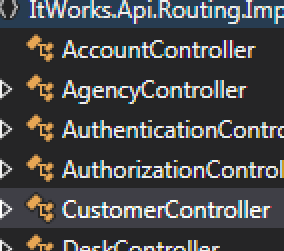Fody - co jeszcze?
- Fody.ToString
- Fody.Seal - Kamil Mrzygłód (nasz człowiek!)
Feature Toggling
- Ujarzmienie if-logy
- Dużo łatwiejsze testowanie skomplikowanych reguł
- Bazuje na lokalnym kontekście wiadomości, roli i innych
- Zawsze jeden, domyślny feature
Feature Toggling - IFeature
public interface IFeature<TContext>
{
bool IsEnabled();
}
Feature Toggling - IToggler
public interface IToggler<TFeature, TContext> where TFeature : IFeature<TContext>
{
TFeature Get(TContext context);
IEnumerable<TFeature> GetAll(TContext context);
}
Feature Toggling - FeatureFinder
public interface IFeatureFinder
{
IEnumerable<TFeature> GetInstances<TFeature, TContext>(TContext context)
where TFeature : IFeature<TContext>;
TFeature GetDefault<TFeature, TContext>(TContext context)
where TFeature : IFeature<TContext>;
}
Implementacja Finder opiera się na przeszukiwaniu kontenera SM
Caching - Second Level
- Standardowy
HttpCache - Wykorzystanie
SqlDependencydo unieważniania danych - Service Broker
- Łatwe użycie - poprzez dekorowanie (aspect)
[Cache("dbo", "SomeTable", "SomeColumnOne", "SomeColumn2")]
public OutEnvelope<GetDesksForAgency.Response>
Handle(GetDesksForAgency.Request request)
{
// ...
}
Caching - First Level
- Cache na czas życia jednego żądania
- Cache rezultatu handlera dla tego samego żądania
Audit
- Niespodzianka! Ponownie poprzez dekorowanie (aspect)
- Zapis pełnego bloku danych
- Domyślnie każde żądanie do serwera jest poddane audytowi
-
Możliwość wyłączenia audytowania dla pewnych operacji:
- Infrastrukturalnych handlerów -
[NotAuditableOperation] - Danych wrażliwych (np. hasła) -
[SensitiveData]
- Infrastrukturalnych handlerów -
Silnie typowane Id
public interface IId : IEquatable<IId>
{ }
Silnie typowane Id - bazowe
public class DocumentId : Id.IntId<DocumentId>
{ }
Silnie typowane Id - complex
[TypeConverter(typeof(DeskIdConverter))]
public class DeskId : Id.IId
{
/// Format: {OrganizationId},{AgencyId},{DeskId}
public static DeskId From(string value)
{ ... }
public static bool TryFrom(string value, out DeskId id)
{ ... }
public class DeskIdConverter : Id.BaseFromStringTypeConverter<DeskId>
{
protected override bool TryParse(string value, out DeskId id)
{
return TryFrom(value, out id);
}
}
}
Inne
- Performance Counter
- Glimpse (pomimo WebApi)
- Pałka-serializator poprawnie zaimplementowany
- Migracje z FluentMigration (+ pull request idempotent migrations)
-
Aplikacja Cmd (z użyciem CommandLineParser)
- Generowanie typów dla TypeScript (PostBuild)
- Transformacja .resx do .json, mapowanie starych kluczy na nowe
- Instalator Performane Counter
Podsumowując message-passing...
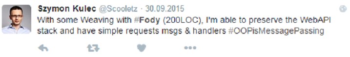Proces
- Testy
- CI
- CD
Testy
- Message-passing testy
- Unit testy
- Funkcjonalne / BDD (SpecFlow)
Testy - TeamCity Code Coverage
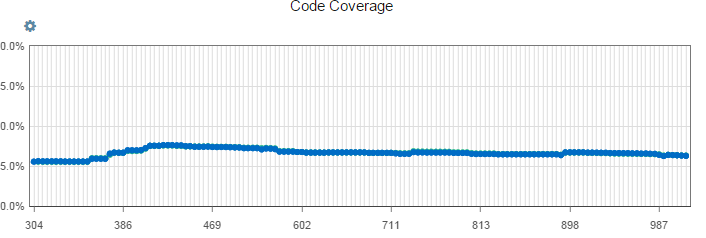Continuous Integration
Continuous Integration
JIRA
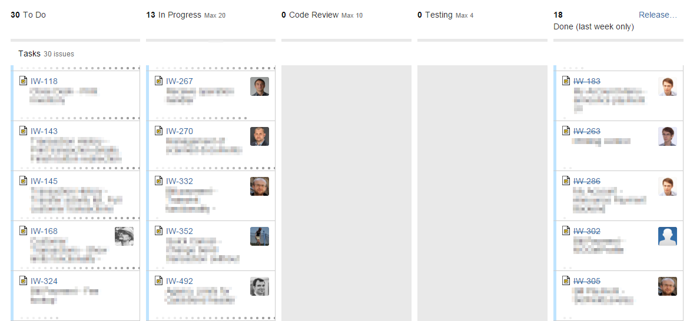Continuous Integration

Continuous Integration
Git
Flow
jest zły
zrób to lepiej
odwróć merge
Continuous Integration
Git Hooks
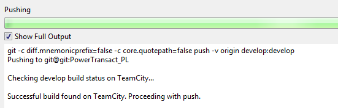Continuous Integration
Code Review
JetBrains Upsource
...a dlaczego nie Atlassian Crucible?
...dlatego
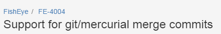 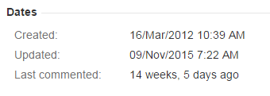 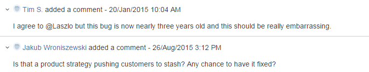Continuous Integration
Automatyczny Build
TeamCity
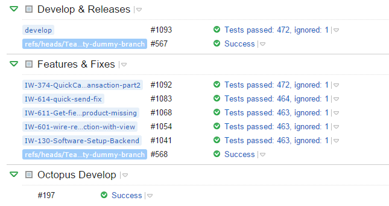Continuous Integration
Budowniczy
- Serwer - PSAKE
- Klient - Gulp
Continuous Integration
Automatyczny Changelog
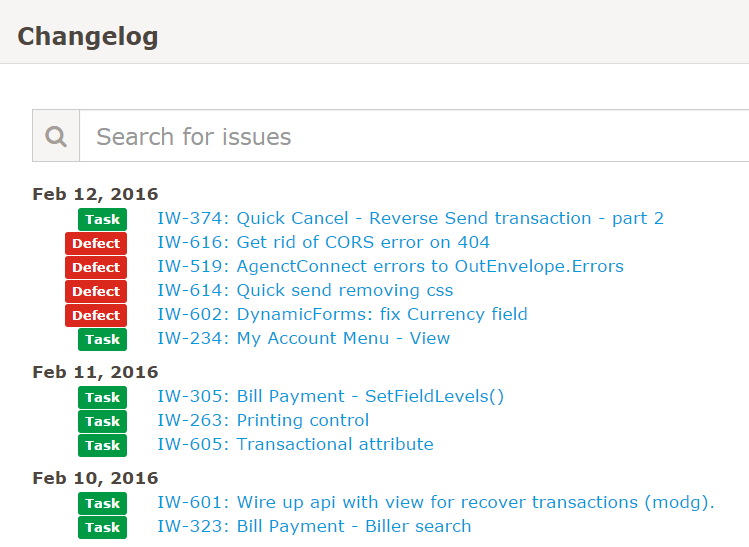Continuous Integration
Nuget
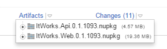Continuous Delivery
Continuous Delivery
Trzy środowiska
- Dev
- QA
- External
Mr.Deploy mail
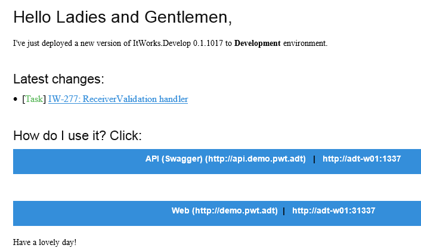CI + Testy + CD =
~ 5 minut
Czasy najnowsze i przyszłość
Proces
Proces
- Continuous Devliery aż do końca
- Propagowanie CI & CD w całej firmie
-
Wyraźny podział Deploymentu vs. Release (zmiana nastawienia biznesu i release mngt)
- Częste deploymenty
- Szybki, lekki release
Architektura
Architektura - UI
- Pozbycie się wsparcia dla IE<10
- Aurelia :)
Architektura - Serwer
- .NET 4.6
- Versioned API
- Async/Await API
- Concurrent (dla Dapper, dla zewnętrznych serwisów)